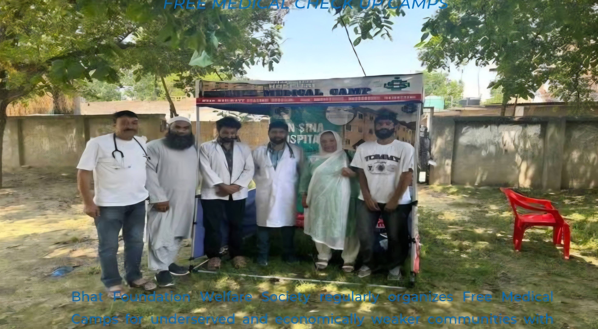
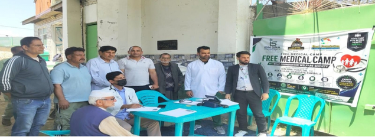

Healthcare Awareness
Free medical camps, health screenings and awareness on hygiene, nutrition, disease prevention and healthy lifestyles.
Ompora Budgam · Jammu & Kashmir
Bhat Foundation Welfare Society is a registered social welfare organization working for the upliftment and welfare of underprivileged and vulnerable communities across Jammu & Kashmir through healthcare awareness, education support, youth development, women empowerment, relief assistance and community welfare programmes.

Who We Are
Bhat Foundation Welfare Society is a registered social welfare organization based in Ompora Budgam, Jammu & Kashmir. The organization works towards the upliftment and welfare of underprivileged and vulnerable communities through various social development initiatives and community support programmes.
Over the years, the Society has earned strong community trust through its grassroots outreach activities and volunteer-driven initiatives, coordinating with local institutions, community leaders and stakeholders to implement welfare programmes effectively at the grassroots level.
Read more about usEducation assistance, youth development, women empowerment, healthcare awareness, relief support, community mobilization and livelihood promotion.
Real development begins at the grassroots level, where compassion, awareness and collective efforts can transform lives.
Transparency, accountability, inclusiveness and sustainable development in every programme we undertake.
A dedicated core team and active volunteers who stand with the community across Jammu & Kashmir.
Areas of Work
Our programmes address the everyday needs of underprivileged and vulnerable communities through awareness, support and community participation.
Free medical camps, health screenings and awareness on hygiene, nutrition, disease prevention and healthy lifestyles.
Educational awareness, career guidance and orientation programmes that encourage students to stay focused on learning.
Personality development, motivational learning and guidance that helps young people build confidence and direction.
Skill development, awareness programmes and livelihood opportunities that support women towards self-reliance.
Humanitarian assistance, relief support activities and welfare services for individuals and families in need.
Encouraging community participation, inclusiveness and sustainable development at the grassroots level.
Our Vision
To build an inclusive, healthy, educated and empowered society where every individual — especially the underprivileged and vulnerable communities — has access to equal opportunities, dignity, social support and sustainable development for a better quality of life.
Our Mission
Key Activities
Our activities are carried out with the participation of volunteers, healthcare professionals, educators, social workers and community leaders.
Free check-ups, consultations and health screenings for underserved communities.
Awareness sessions on hygiene, sanitation, nutrition and preventive healthcare.
Live orientation programmes on career planning, higher education and personality development.
Drug awareness camps promoting healthy, drug-free lifestyles among youth.
Skill development and livelihood-oriented support for women.
Practical skill-building that supports self-reliance and employability.
Community plantation drives for a greener, healthier environment.
Awareness on safe water practices and community sanitation.
Who We Serve

Why Our Work Matters
We strongly believe that real development begins at the grassroots level, where compassion, awareness and collective efforts can transform lives and build stronger communities.
Our mission is not only to provide support to those in need, but also to empower individuals with opportunities, awareness and hope for a better future — through free medical camps, awareness campaigns, educational initiatives and social welfare activities.
We remain committed to transparency, inclusiveness, accountability and sustainable development as we continue our mission of serving society with dedication and compassion.
Whether you would like to offer your time, your skills or simply learn more about our work, we would be glad to hear from you.